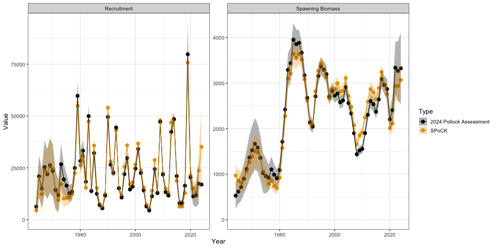

Setting up a Single Region Model (Eastern Bering Sea Pollock)
f_single_region_ebs_pollock_case_study.RmdTo further demonstrate additional funcionality of SPoRC,
we will use the 2024 eastern Bering Sea walleye pollock assessment as an
example. In particular, this vignette attempts to mimic the 2024
assessment. However, given the complexity and intricacies of the pollock
assessment, a direct match in estimates is not currently possible due to
a variety of factors, including:
- The pollock assessment fits to the bottom trawl survey with a
covariance matrix, which is currently not possible in
SPoRC, - The bottom trawl survey follows a random walk process on logistic
selectivity parameters, but also allows for age-1 deviations on the
logistic functional form. This functionality is not incorporated in
SPoRC, - Different weight-at-age matrices are utilized to fit to biomass indices, compute spawning biomass, and compute expected catches, which is not currently allowed.
Despite these differences, SPoRC can generally
approximate the dynamics of the 2024 assessment relatively closely.
First, let us load in any necessary packages.
# Load in packages
library(SPoRC)
library(here)
library(RTMB)
library(ggplot2)
library(dplyr)
data("sgl_rg_ebswp_data") # load in dataSetup Model Dimensions
To initially set the model up, an input list containing a data list,
parameter list, and a mapping list needs to be constructed. This is
aided with the function Setup_Mod_Dim, where users specify
a vector of years, ages, and lengths. Additionally, users need to
specify the number of regions modelled (n_regions), number of sexes
modeled (n_sexes), number of fishery fleets (n_fish_fleets), and number
of survey fleets (n_srv_fleets)
input_list <- Setup_Mod_Dim(
years = sgl_rg_ebswp_data$years,
# vector of years
ages = sgl_rg_ebswp_data$ages,
# vector of ages
lens = NA,
# number of lengths
n_regions = 1,
# number of regions
n_sexes = 1,
# number of sexes
n_fish_fleets = 1,
# number of fishery fleets
n_srv_fleets = 3 # number of survey fleets
)Setup Recruitment Dynamics
Following the initialization of input_list, we can pass
the created object into the next function (Setup_Mod_Rec)
to parameterize recruitment dynamics. In the case of Bering Sea Pollock,
recruitment is parameterized as such:
- Beverton-Holt Recruitment, where steepness is fixed at the 2024 assessment estiamted value,
- Recruitment deviations are estimated in a penalized likelihood framework,
- Recruitment deviations are estimated for all years,
- Initial age deviations have a
ln_sigmaR = 2, while later deviations (after year 1) have aln_sigmaR = 1. This is done to mimic the current assessment, where a different mean parameter is estimated for the early age deviations and later recruitment deviations, - Initial age deviations are estimated for all ages, including the plus group,
- Initial age structure is derived by assuming a geometric series
(
init_age_strc = 1; the alternative is iterating age structure to some equilibriuminit_age_strc = 0), and - Individuals are assumed to spawn during March
(
t_spawn = 0.25)
inv_steepness <- function(s) qlogis((s - 0.2) / 0.8)
input_list <- Setup_Mod_Rec(
input_list = input_list,
# Model options
do_rec_bias_ramp = 0,
# do bias ramp (0 == don't do bias ramp, 1 == do bias ramp)
sigmaR_switch = 1,
# when to switch from early to late sigmaR (switch in first year)
ln_sigmaR = log(c(2, 1)),
# Starting values for early and late sigmaR
rec_model = "bh_rec",
# recruitment model
steepness_h = inv_steepness(0.623013),
h_spec = "fix",
# fixing steepness
sigmaR_spec = "fix",
# fix early sigmaR and late sigmaR
sexratio = as.vector(c(1.0)),
# recruitment sex ratio
init_age_strc = 1,
ln_global_R0 = 10,
t_spawn = 0.25,
equil_init_age_strc = 2
# starting value for r0
)Setup Biological Dynamics
Passing on the input_list that was updated in the
previous helper function, we can then parameterize the biological
dynamics of the model. The Setup_Mod_Biologicals requires
data inputs for weight-at-age (WAA) and maturity-at-age
(MatAA), both of which are dimensioned by
n_regions, n_years, n_ages,
n_sexes. In the case of Bering Sea pollock, natural
mortality is age-specific and fixed. Thus, a natural mortality array is
constructed and passed into the function, which is also dimensioned by
n_regions, n_years, n_ages,
n_sexes.
# Setup a fixed natural mortality array for use
fix_natmort <- array(0, dim = c(input_list$data$n_regions, length(input_list$data$years), length(input_list$data$ages), 1))
fix_natmort[,,1,] <- 0.9 # age 1 M
fix_natmort[,,2,] <- 0.45 # age 2 M
fix_natmort[,,-c(1,2),] <- 0.3 # age 3+ M
input_list <- Setup_Mod_Biologicals(
input_list = input_list,
# Data inputs
WAA = sgl_rg_ebswp_data$WAA,
MatAA = sgl_rg_ebswp_data$MatAA,
# Model options
# mean and sd for M prior
fit_lengths = 0,
# don't fit length compositions
M_spec = "fix",
# fixing natural mortality
Fixed_natmort = fix_natmort
)
Setup Movement and Tagging
Given that this vignette demonstrates a single-region model, no
movement dynamics are specified. However, users will still need to
define how movement dynamics are parameterized. In this case, the
following code chunk specifies that movement is not estimated
(use_fixed_movement = 1), movement is an identity matrix
(Fixed_Movement = NA), and recruits do not move
(do_recruits_move = 0). Specification of tagging dynamics
will follow a similar fashion since this is a single-region model. All
that is necessary is updating the input_list and setting
the UseTagging argument to a value of 0.
# setup movement
input_list <- Setup_Mod_Movement(
input_list = input_list,
use_fixed_movement = 1,
Fixed_Movement = NA,
do_recruits_move = 0
)
# setup tagging
input_list <- Setup_Mod_Tagging(
input_list = input_list,
UseTagging = 0)Setup Catch and Fishing Mortality
Following the parameterization of biological dynamics, fishery
dynamics can then be specified and set up using the
Setup_Mod_Catch_and_F function. Again, the input_list that
gets updated from previous helper functions. Users will need to supply
the function with an array of observed catches ObsCatch,
which are dimensioned as n_regions, n_years,
and n_fish_fleets. Similarly, users will also need to
specify the catch type of these observations with the
Catch_Type argument. This argument expects a matrix
dimensioned by n_years and n_fish_fleets, and
is really only applicable in a spatial model (values of 0 indicate that
catch is aggregated across regions in some periods and fleets, while
values of 1 indicate catch is specific to each region in all periods and
fleets). Thus, in a single region model, values of 1 should
always be supplied. The function also expects the UseCatch
argument to be specified, which is dimensioned as
n_regions, n_years, and
n_fish_fleets. Essentially, users will need to fill out
whether catch is fit to for those particular partitions. Most use cases
of this argument are scenarios in which catch is observed to be a value
of 0, where the helper function automatically turns off the estimation
of fishing mortality deviations for those partitions. Additional model
options specified for this case study include whether fishing mortality
penalties are utilized to help estimate deviations
Use_F_pen = 1, and the ln_sigmaC values to fix
at.
input_list <- Setup_Mod_Catch_and_F(
input_list = input_list,
# Data inputs
ObsCatch = sgl_rg_ebswp_data$ObsCatch,
Catch_Type = sgl_rg_ebswp_data$Catch_Type,
UseCatch = sgl_rg_ebswp_data$UseCatch,
# Model options
Use_F_pen = 1,
# whether to use f penalty, == 0 don't use, == 1 use
sigmaC_spec = "fix",
# fixing catch standard deviation
ln_sigmaC = matrix(log(0.05), 1, 1)
# starting / fixed value for catch standard deviation
)Setup Fishery Indices and Compositions
To set up fishery indices and composition data, we will supply arrays
of fishery indices and their associated standard errors
(ObsFishIdx and ObsFishIdx_SE), which are
dimensioned by by n_regions, n_years,
n_fish_fleets. Additionally, we will supply both fishery
age composition data and length composition data. Both
ObsFishAgeComps and ObsFishLenComps are
dimensioned by n_regions, n_years,
n_bins (n_ages | n_lens), n_sexes,
n_fish_fleets. Because the Bering Sea pollock model does
not fit to length composition data, ObsFishLenComps is
specified at NA and UseFishLenComps is
specified with 0s. Additionally, we specify that the fishery index is
biomass-based, multinomial likelihoods are utilized for age composition
data, and fishery age compositions are aggregatted across regions and
sexes (because this is a single-region single-sex model).
input_list <- Setup_Mod_FishIdx_and_Comps(
input_list = input_list,
# data inputs
ObsFishIdx = sgl_rg_ebswp_data$ObsFishIdx,
ObsFishIdx_SE = sgl_rg_ebswp_data$ObsFishIdx_SE,
UseFishIdx = sgl_rg_ebswp_data$UseFishIdx,
ObsFishAgeComps = sgl_rg_ebswp_data$ObsFishAgeComps,
UseFishAgeComps = sgl_rg_ebswp_data$UseFishAgeComps,
ISS_FishAgeComps = sgl_rg_ebswp_data$ISS_FishAgeComps,
ObsFishLenComps = array(NA_real_, dim = c(1, length(input_list$data$years), length(input_list$data$lens), 1, 1)),
UseFishLenComps = array(0, dim = c(1, length(input_list$data$years), 1)),
# Model options
fish_idx_type = c("biom"),
# indices for fishery
FishAgeComps_LikeType = c("Multinomial"),
# age comp likelihoods for fishery fleet
FishLenComps_LikeType = c("none"),
# length comp likelihoods for fishery
FishAgeComps_Type = c("agg_Year_1-terminal_Fleet_1"),
# age comp structure for fishery
FishLenComps_Type = c("none_Year_1-terminal_Fleet_1"),
# length comp structure for fishery
FishAge_comp_agg_type = c(1),
# ADMB aggregation quirks, ideally get rid of this
FishLen_comp_agg_type = c(0)
# ADMB aggregation quirks, ideally get rid of this
)Setup Survey Indices and Compositions
Setting up survey indices and compositions follows a similar fashion.
Here, will supply arrays of survey indices and their associated standard
errors (ObsSrvIdx and ObsSrvIdx_SE), which are
dimensioned by by n_regions, n_years,
n_srv_fleets. In this case, we are modelling three survey
fleets, where fleet 1 is the bottom trawl survey, fleet 2 is the
acoustic trawl survey, and fleet 3 is the acoustic vessel of opportunity
survey. We will also input both survey age composition data and length
composition data. Both ObsSrvAgeComps and
ObsSrvLenComps are dimensioned by n_regions,
n_years, n_bins (n_ages | n_lens),
n_sexes, n_srv_fleets. All three survey
indices are biomass-based and multinomial likelihoods are used to fit to
age-compositions for fleets 1 and 2. However, because the acoustic
vessel of oppurtunity survey does not have composition data, these are
not fit to (and hence specified at none).
# Setup survey indices and compositions
input_list <- Setup_Mod_SrvIdx_and_Comps(
input_list = input_list,
# data inputs
ObsSrvIdx = sgl_rg_ebswp_data$ObsSrvIdx,
ObsSrvIdx_SE = sgl_rg_ebswp_data$ObsSrvIdx_SE,
UseSrvIdx = sgl_rg_ebswp_data$UseSrvIdx,
ObsSrvAgeComps = sgl_rg_ebswp_data$ObsSrvAgeComps,
ISS_SrvAgeComps = sgl_rg_ebswp_data$ISS_SrvAgeComps,
UseSrvAgeComps = sgl_rg_ebswp_data$UseSrvAgeComps,
ObsSrvLenComps = array(NA_real_, dim = c(1, length(input_list$data$years), length(input_list$data$lens), 1, 3)),
UseSrvLenComps = array(0, dim = c(1, length(input_list$data$years), 3)),
ISS_SrvLenComps = NULL,
# Model options
srv_idx_type = c("biom", "biom", "biom"),
# abundance and biomass for survey fleet 1, 2, and 3
SrvAgeComps_LikeType = c("Multinomial", "Multinomial", "none"),
# survey age composition likelihood for survey fleet 1, 2, and 3
SrvLenComps_LikeType = c("none", "none", "none"),
# survey length composition likelihood for survey fleet 1, 2, and 3
SrvAgeComps_Type = c(
"agg_Year_1-terminal_Fleet_1",
"agg_Year_1-terminal_Fleet_2",
"none_Year_1-terminal_Fleet_3"
),
# survey age comp type
SrvLenComps_Type = c(
"none_Year_1-terminal_Fleet_1",
"none_Year_1-terminal_Fleet_2",
"none_Year_1-terminal_Fleet_3"
),
# survey length comp type
SrvAge_comp_agg_type = c(1, 1, 1),
# ADMB aggregation quirks, ideally get rid of this
SrvLen_comp_agg_type = c(0, 0, 0)
# ADMB aggregation quirks, ideally get rid of this
)Setting up Fishery Selectivity and Catchability
Fishery selectivity is specified to vary semi-parametrically for the
pollock model, with the 2dar1 option specified. Here, we
will estiamte selectivity deviations in a penalized framework and fix
variance values a priori fishsel_pe_pars_spec = "fix".
Moreover, we will estiamte fishery selectivity deviations for all
dimensions, and specify correlations to be set at 0
(corr_opt_semipar = "corr_zero_y_a_c"). Thus,
semi-parametric deviations collapse to a simple iid formulation.
Additionally, we specify that the underlying selectivity form for the
fishery is a logistic function. Lastly, a single catchability term is
estimated to fit to the early fishery index utilized in the model
(fish_q_spec = c("est_all")). In the Fit Model
section, we will demonstrate how variance parameters can be fixed to
allow for estimation in a penalized likelihood framework.
# Setup fishery selectivity and catchability
input_list <- Setup_Mod_Fishsel_and_Q(
input_list = input_list,
# Model options
# fishery selectivity, whether continuous time-varying
cont_tv_fish_sel = c("2dar1_Fleet_1"),
fishsel_pe_pars_spec = "fix", # doing penalized likelihood for selex devs
fish_sel_devs_spec = "est_all", # estimating all sel devs
corr_opt_semipar = "corr_zero_y_a_c", # making sure 2d correaltions are 0, collapses to a simple iid case
# fishery selectivity blocks
fish_sel_blocks = c("none_Fleet_1"),
# fishery selectivity form
fish_sel_model = c("logist1_Fleet_1"),
# fishery catchability blocks
fish_q_blocks = c("none_Fleet_1"),
# whether to estiamte all fixed effects for fishery selectivity
fish_fixed_sel_pars = c("est_all"),
# whether to estiamte all fixed effects for fishery catchability
fish_q_spec = c("est_all")
)Setting up Survey Selectivity and Catchability
Survey selectivity is setup in a similar way. Here, we specify that
the first survey fleet has iid parametric deviations on a
selectivity form, while the second survey fleet has 2dar1
semi-parametric deviations. Selectivity for survey fleet 3 is not
estimated as no age composition data are available. Therefore,
selectivity from survey fleet 2 and 3 are shared. Again, we specify that
selectivity deviations are estimated in a penalized likelihood framework
with the argument
srvsel_pe_pars_spec = c("fix", "fix", "fix") and specify to
set 2dar1 correlations at 0, such that semi-parametric
deviations collapse to an iid formulation
(corr_opt_semipar = c(NA, "corr_zero_y_a_c", "corr_zero_y_a_c")).
# Setup survey selectivity and catchability
input_list <- Setup_Mod_Srvsel_and_Q(
input_list = input_list,
# Model options
# survey selectivity, whether continuous time-varying
cont_tv_srv_sel = c("iid_Fleet_1", "2dar1_Fleet_2", "2dar1_Fleet_3"),
srvsel_pe_pars_spec = c("fix", "fix", "fix"), # penalize survey selex devs
srv_sel_devs_spec = c("est_all", "est_all", "none"), # estimating all srv selex devs
corr_opt_semipar = c(NA, "corr_zero_y_a_c", "corr_zero_y_a_c"), # setting corelations at 0, so 2dar1 collapses to simple iid semi-parametric devs
# survey selectivity blocks
srv_sel_blocks = c("none_Fleet_1", "none_Fleet_2", "none_Fleet_3"),
# survey selectivity form
srv_sel_model = c(
"logist1_Fleet_1",
"logist1_Fleet_2",
"logist1_Fleet_3"
),
# survey catchability blocks
srv_q_blocks = c("none_Fleet_1", "none_Fleet_2", "none_Fleet_3"),
# whether to estiamte all fixed effects for survey selectivity
srv_fixed_sel_pars_spec = c("est_all", "est_all", "est_all"),
# whether to estiamte all fixed effects for survey catchability
srv_q_spec = c("est_all", "est_all", "est_all")
)
# note that AVO (fleet 3) does not have any comp data, and needs to share selectivity with ATS (fleet 2)
input_list$map$ln_srv_fixed_sel_pars <- factor(c(1, 2, 3, 4, 3, 4))
# share ATS and AVO selex devs
map_srvsel_devs[,,,,3] <- map_srvsel_devs[,,,,2]
input_list$map$ln_srvsel_devs <- factor(map_srvsel_devs)Setup Model Weighting
We will then set up how data should be weighted with in this model. Here, all values are set at 1 and TMB likelihoods are utilized. Thus, all data sources are weighted either using specified input sample sizes (for composition data) or specified variances (catch and abundance indices).
input_list <- Setup_Mod_Weighting(
input_list = input_list,
sablefish_ADMB = 0,
likelihoods = 1, # using TMB likelihoods
Wt_Catch = 1,
Wt_FishIdx = 1,
Wt_SrvIdx = 1,
Wt_Rec = 1,
Wt_F = 1,
Wt_Tagging = 0,
Wt_FishAgeComps = array(1, dim = c(input_list$data$n_regions,
length(input_list$data$years),
input_list$data$n_sexes,
input_list$data$n_srv_fleets)),
Wt_FishLenComps = array(1, dim = c(input_list$data$n_regions,
length(input_list$data$years),
input_list$data$n_sexes,
input_list$data$n_srv_fleets)),
Wt_SrvAgeComps = array(1, dim = c(input_list$data$n_regions,
length(input_list$data$years),
input_list$data$n_sexes,
input_list$data$n_srv_fleets)),
Wt_SrvLenComps = array(1, dim = c(input_list$data$n_regions,
length(input_list$data$years),
input_list$data$n_sexes,
input_list$data$n_srv_fleets))
)Fit Model and Plot
Next, we can extract out elements created from the
input_list object. We will then specify the values to fix
selectivity variances at. In the first case, the fishery selectivity
variance is fixed at a value of 0.075 In the second case, the bottom
trawl survey a50 and k selectivity variances
for a logistic function are fixed at 0.075 Lastly, the acoustic trawl
and vessel of opportunity surveys will have a specified variance of
0.15. For further details on the dimensionality of
fishsel_pe_pars and srvsel_pe_pars, please
refer to the Description of Model Parameters page.
# extract out lists updated with helper functions
data <- input_list$data
parameters <- input_list$par
mapping <- input_list$map
# selex sigma to fix at, given penalized likelihood
parameters$fishsel_pe_pars[,4,,] <- log(0.075) # fishery selex variance
parameters$srvsel_pe_pars[,1:2,,1] <- log(0.075) # survey BTS - a50 and delta variance
parameters$srvsel_pe_pars[,4,,2] <- log(0.15) # survey ATS and ato variance
# Fit model
ebswp_rtmb_model <- fit_model(data,
parameters,
mapping,
random = NULL,
newton_loops = 3,
silent = TRUE
)
# Get standard error report
ebswp_rtmb_model$sd_rep <- RTMB::sdreport(ebswp_rtmb_model)Next, we can extract out parameter estimates of recruitment and spawning biomass and compare to the 2024 pollock model.
# Get recruitment
rec_series <- reshape2::melt((ebswp_rtmb_model$rep$Rec)) %>%
mutate(se = ebswp_rtmb_model$sdrep$sd[names(ebswp_rtmb_model$sdrep$value) == 'Rec'])
rec_series$Par <- "Recruitment"
# Get SSB time-series
ssb_series <- reshape2::melt((ebswp_rtmb_model$rep$SSB)) %>%
mutate(se = ebswp_rtmb_model$sdrep$sd[names(ebswp_rtmb_model$sdrep$value) == 'SSB'])
ssb_series$Par <- "Spawning Biomass"
# bind together
ts_df <- rbind(ssb_series,rec_series) %>%
dplyr::rename(Region = Var1, Year = Var2) %>%
dplyr::mutate(Year = Year + 1963, type = 'SPoRC')
# Get actual assessment results
ssb_ass <- data.frame(
Region = 1,
Year = 1964:2024,
value = sgl_rg_ebswp_data$SSB[,2],
se = sgl_rg_ebswp_data$SSB[,3],
Par = 'Spawning Biomass',
type = '2024 Pollock Assessment'
)
# recruitment
rec_ass <- data.frame(
Region = 1,
Year = 1964:2024,
value = sgl_rg_ebswp_data$R[,2],
se = sgl_rg_ebswp_data$R[,3],
Par = 'Recruitment',
type = '2024 Pollock Assessment'
)
# bind
ts_df <- ts_df %>% bind_rows(ssb_ass, rec_ass)In general, we see that the trends in recruitment and spawning stock biomass align relatively well. However, there are some slight discrepancies between these estimates, likely due to the factors discussed at the start of this vignette.
ggplot(ts_df, aes(x = Year, y = value, ymin = value - (1.96 * se),
ymax = value + (1.96 * se), color = type, fill = type)) +
geom_point(size = 3) +
geom_line() +
facet_wrap(~Par, scales = 'free') +
geom_ribbon(alpha = 0.3, color = NA) +
ggthemes::scale_color_colorblind() +
ggthemes::scale_fill_colorblind() +
labs(y = "Value") +
theme_bw(base_size = 13) +
ylim(0, NA) +
labs(x = 'Year', y = 'Value', color = 'Type', fill = 'Type')
Lastly, we can also inspect estimates of fishery selectivity from
SPoRC. Here, we show relative selectivity estimates for
ages 3 - 11 (panels). Note that selectivity in this model can exceed 1,
and we normalize these values in the figure to improve
interpretability
reshape2::melt(ebswp_rtmb_model$rep$fish_sel) %>%
mutate(value = value/max(value)) %>%
rename(Region = Var1, Year = Var2, Age = Var3, Sex = Var4, Fleet = Var5) %>%
filter(Age %in% 3:11) %>%
ggplot(aes(x = Year + 1963, y = value)) +
geom_point() +
geom_line() +
facet_wrap(~Age) +
theme_bw(base_size = 15) +
labs(x = 'Year', y = 'Relative Selectivity')